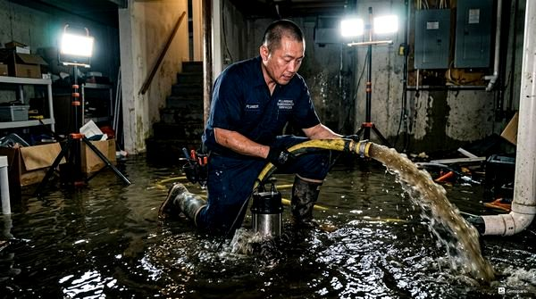
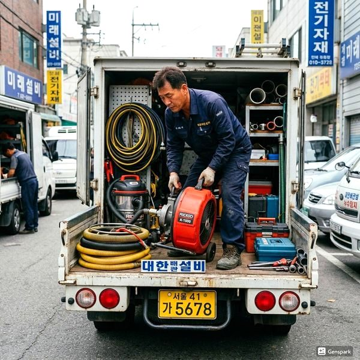
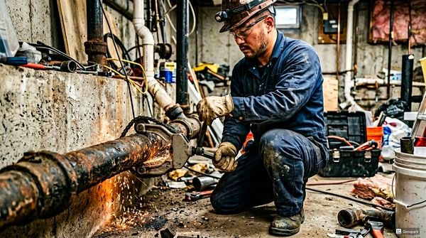

하수구에 기름이 굳었을 때 확실한 해결법
2026년 4월 12일 | 제우스시설관리
식용유, 돼지기름, 소기름 등을 배수구에 버리면 배관 안에서 냉각되어 하얀 덩어리로 굳습니다. 이 기름 덩어리는 시간이 지날수록 단단해지고, 다른 이물질과 결합하여 배관을 완전히 막습니다. 전국 하수구 막힘의 50% 이상이 기름이 원인입니다.

기름 막힘의 진행 과정: 처음에는 배관 벽에 얇은 기름막이 형성됩니다. 여기에 세제 찌꺼기, 음식물 입자가 달라붙고, 위에 또 기름이 쌓입니다. 이 과정이 반복되면 배관 내경이 점점 좁아지다가 결국 완전 막힘에 이릅니다.
끓는 물을 부어도 고착된 기름때는 잘 녹지 않습니다. 화학 세정제는 표면만 반응하고 두꺼운 기름층은 관통하지 못합니다. 확실한 해결법은 드레인 기계의 커터 헤드로 기름 덩어리를 물리적으로 절삭하고, 고압세척기의 150bar 이상 수압으로 배관 벽면의 기름막을 완전히 제거하는 것입니다.

예방이 가장 중요합니다. ① 조리 후 기름은 키친타월로 닦아내고 세척, ② 폐식용유는 배수구가 아닌 폐유통에 수거, ③ 주 1회 뜨거운 물(60도 이상) 흘리기, ④ 음식점은 그리스트랩 정기 청소. 이 습관만으로 기름 막힘을 대부분 예방할 수 있습니다.

이미 기름이 굳어 배수가 안 된다면, 빠른 조치가 필요합니다. 방치할수록 기름이 더 단단해져 작업이 어려워집니다. 제우스시설관리: 28분 내 출동, 전화: 010-4406-1788